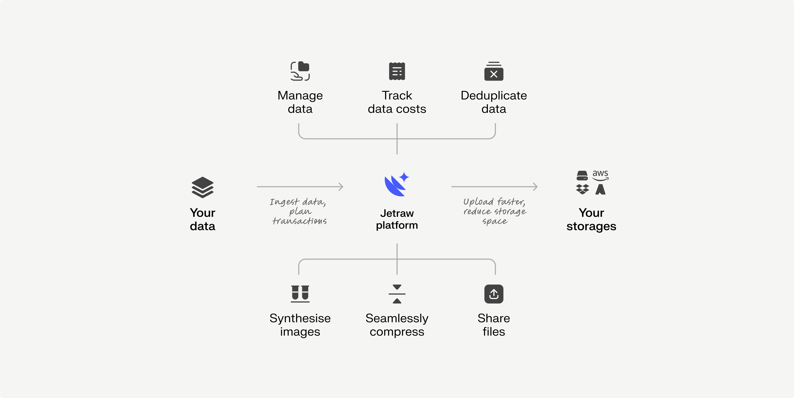
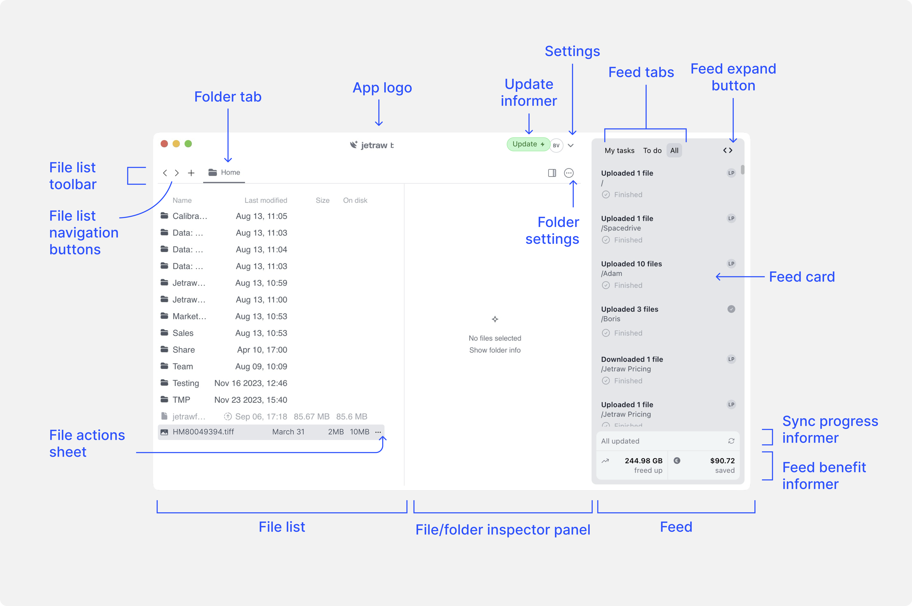

Jetraw Platform¶
Jetraw Platform is a versatile image data management system that simplifies data transfer, improves access, and reduces costs while boosting AI/ML efficiency. It merges the functionalities of multiple apps, overcoming compatibility issues, and making data more team-friendly. Jetraw’s standout feature is its advanced image compression technology, allowing up to 10x more storage efficiency and faster transfers. Besides compression, Jetraw offers solutions for storing, tracking, and managing large data volumes easily, ideal for both data producers and IT administrators.
{kind=link}
Contents¶
Explore our documentation:
Glossary¶
This section provides definitions for key terms used throughout the Jetraw Platform, helping users familiarize themselves with the terminology related to file management, storage, and platform operations. Each term is crucial to understanding how Jetraw organizes and processes data, as well as how users interact with the platform’s features such as file views, storage management, and settings.
Files Window Glossary¶
{kind=link}
Files Tabs Glossary¶

Queue Window Glossary¶

Overall terminology¶
Term |
Meaning |
|---|---|
Destination |
The location where files are stored, copied, or moved. It can be a specific directory, folder, or storage location. |
Folder |
A container used to organize files within the file system, providing a hierarchical structure for easy navigation. |
Backup Copy |
A secondary copy of data stored in another location to protect against loss or corruption. |
Storage |
Refers to both local (e.g., SSD, NAS) and cloud storage (e.g., AWS S3). It can represent the physical or logical space used to store data. |
File View |
An instance or reference to a file, using symbolic links to avoid duplicating the actual file data. |
Smart Storage |
A system that allows multiple file views while maintaining a single instance of the data to prevent redundancy. |
Operation |
Actions such as moving, deleting, or duplicating files and folders. |
Queue |
A list of pending operations, such as uploads or downloads, executed automatically or manually. |
File List |
Displays all files and folders in the current directory. This panel allows users to navigate the file system and perform actions like sorting and filtering. |
File Actions Sheet |
A dropdown menu that provides options to interact with selected files, such as move, delete, or duplicate. |
Feed |
A panel showing updates or activities within the system, such as file uploads, sync status, and notifications. |
Folder Settings |
A configurable menu that allows users to adjust settings for individual folders, such as permissions or backup preferences. |
File/Folder Inspector Panel |
Provides detailed information about selected files or folders, including metadata, file size, and modification dates. |
Mounted Folder |
Your Jetraw volume available as a read-only mounted folder in your File Explorer (currently Windows-only). |
User |
An individual with access to the Jetraw platform through their log-in account. |
Account |
The organization or entity that owns the Jetraw license and enables user access. |
Features¶
Jetraw transparent compression and decompression¶
Jetraw Platform uses Jetraw under the hood as the image compression technology that was engi- neered for critical applications: it compresses raw image data at a compression ratio of 4:1 to 10:1, it is much faster than traditional systems, and stands out in terms of data reliability as the only metrologically accurate compression on the market. For more information on the technology, please visit Jetraw Core Technology web page by Dotphoton.
Mode of operation¶
Image data often contains a significant amount of noise and redundancy. Jetraw algorithm solves this problem by replacing most of the noise with predictable pseudo-random noise based on sensor calibration (we support most CCD and sCMOS sensors). A specialized lossless compression algorithm then efficiently compresses this noise and redundant data, resulting in compression ratios from 4:1 to 10:1. This two-step process allows for reversible compression and offers the flexibility to switch to other lossless algorithms in the future. The fact that the second part of the algorithm is lossless ensures that the image data can be decompressed and re-compressed without further modification and allows compatibility with different container formats.
List of file formats subject to compression¶
Jetraw compression is a codec, meaning it is file agnostic. However, Jetraw needs to be able to access the file wrapper to keep the same format after compression. So far, the following file extensions have been integrated: tiff, tif, dng, DNG and czi . If you have a different file type, contact our team to further discuss file format integration.
Jetraw Main Advantages¶
Faster Transfers with Award-Winning Compression: Experience accelerated upload and download speeds with Jetraw’s advanced compression technology, allowing for rapid data transfers. With high compression ratios, you can reduce storage and bandwidth usage by up to 90%. For example, a 2 bpp (bits per pixel) target on a 16 bpp sensor can achieve an 8:1 compression ratio, significantly optimizing data efficiency.
High-Speed Data Handling: Jetraw compression is designed to match typical data acquisition rates, which are often constrained by network or device connection speeds around 1 Gbps. By leveraging multi-core processing, Jetraw can handle up to 500 Mpix/s at 2 bpp, ensuring you can fully utilize your network’s capacity for seamless data transfers.
Universal Storage Connectivity: Seamlessly connect to both local and cloud storage systems, providing a unified and simplified data management experience across platforms. Jetraw’s compatibility with various storage types ensures easy access and management of all your data.
Centralized Access and Deduplication: Access all your data from a single point, regardless of its physical location, while reducing redundant copies through Jetraw’s built-in deduplication features. This ensures efficient data storage and retrieval across systems.
User-Friendly File System Integration: Jetraw offers an intuitive, cross-platform interface that mimics traditional file system functionality. This makes the platform easy to use and integrate into your existing workflows, whether you’re on Windows, macOS, or Linux.
Comprehensive Data and Transaction Tracking: With Jetraw’s integrated queue system, you can easily monitor all data and transactions, ensuring you stay informed about all file activities. Transactional operations are managed as cohesive units, providing reliable and consistent data management.
Transparent Compression and Decompression: Jetraw requires no additional software or codecs for decompression. All compressed files are automatically decompressed during download, ensuring smooth data exchange and integration into your workflow.
Easy integration with your File Explorer: Jetraw Platform allows you to mount your Jetraw volume as a read-only folder in your File Explorer, making it easy to access your data locally.
Supported Storage¶
Jetraw Platform currently supports any local storage that can be mounted, as well as AWS S3. We are actively working on expanding support to include S3-compatible storage from other providers, such as Microsoft Azure and Google Cloud.